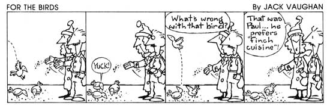

This winter, provide visiting wildfowl with suppers worth singing for by serving ...
My family and I derive a lot of pleasure from feeding the wild birds wintering on and around our Pennsylvania farmstead. Not only is it enchanting to watch the many varieties of feathered songsters that gather around our bird feeder every year ... but it's also gratifying to know that-in our own small way-we're contributing to the well-being of some of Mother Nature's most delightful creatures.
Furthermore, we've found that-during the late summer and early fall-the countryside around our home is a cornucopia of weeds, wildflowers, fruit, and grasses. And these free-for-the-gathering "crops" can provide banquets for a whole winter's worth of voracious birds. There's enough diversity to please even the most persnickety of palates, too! If you're like my family and me-and your heart goes out to the small feathered beings that will soon be huddled on snowy tree limbs, but your budget won't stretch far enough for you to buy commercial birdseed-then get out your foraging gear (actually, any old sack or bucket will do) ... put on your walking shoes ... and start scouring the fields, creek banks, and roadsides!
"O THOU WEED"
Of all the different types of wild-growing avian feed, weed seeds are perhaps the most plentiful and the easiest to collect. Moreover, game birds relish them, as do songbirds. Indeed, although the scientific term for ragweed (that bane of hay fever sufferers) is Ambrosia, or "food for the gods", it could be called "food for the birds", since its seeds are so popular with wild turkey and grouse in the frozen months. You'll find the weed-which can be recognized by its tri-lobed leaves and tiny green flowers-growing along roadsides and in fields. [EDITOR'S NOTE: If you need help in identifying plants (or birds), you may want to stop at your local bookstore and pick up copies of the Audubon Society's wildflower and bird guides that are pertinent to your region.]
Some game birds, pheasants in particular, like smartweed (Polygonum hydropiperoides) seeds, which in times past were gathered and ground into meal as a substitute for buck wheat. Generally found by the roadside, the plant is characterized by small pinkish flowers and swollen leaf joints (which were seen as a "signature" by early doctors, who prescribed smartweed in treating arthritis, rheumatism, and gout).
Another favorite among our winter boarders is wild amaranth, commonly called pigweed. I can't say how popular it is with pigs, but the coarse, hairy, stout-stemmed plant bears lots of tiny black seeds that certainly are sought after by many species of birds!
"THE FRUIT OF LOYAL NATURE.
To attract robins, mockingbirds, and cedar waxwings to our "tea table", we add several handfuls of sumac berries to the menu. However, if you have this colorful plant growing in your area of the country, be sure that you pick only the red berries of the staghorn sumac and avoid the white fruit of the poison sumac! (While you're out collecting for your winged wonders, you may want to gather an extra bucketful of the sweet red clusters for your family, because-when the berries are crushed, steeped in boiling water, and strained-they make a yummy "Indian lemonade" that can be served hot or cold.)
You're probably already aware that hummingbirds (and other nectar seekers) are fond of the juice of the trumpet honeysuckle blossoms (Lonicera sempervirens), but did you know that bobwhites and catbirds enjoy the red berries that this bush produces in autumn . . , or that-for yet another songster supper-you can pluck the dark, glossy berries of the red-stemmed poke plant (Phytolacca americana)? Even though most folks consider them to be poisonous to humans, these delicacies will be safely savored by wrens and cardinals.
FIELDS AND FLOWERS
Sunflower seeds are just about at the top of the list of all-time favorite foods for wild birds. They crave the oil (which Native Americans once used to dress their hair) as it provides protein, fat, and a coating for feathers that helps ward off harsh weather. Black-eyed Susans, asters, snapdragons, blazing stars, cornflowers, and chicory all vie for second place in attracting finches and sparrows to harvest their seeds.
Besides wildflowers, fruits, and weed seeds, don't pass up the ample supply of seed-bearing grasses you're bound to run across! Millet, flax, barley, wheat, oats (yes, these actually do grow wild), and even good old lawnmarring crabgrass are welcomed by blackbirds, starlings, pigeons, and members of the bunting group ... while buckwheat satisfies the taste buds of doves and quail.
DINNER IS SERVED!
Once your sack or pail is filled to the brim with weeds and flowers and whatnot, take the harvest of free food home and dry it, to preserve it for the winter "eating season". It's usually best to bunch the plants in groups of five, placing a rubber band around the stems of each clump, and then hanging the bouquets upside down from a beam or rack in an area of your house that gets good air circulation and a modicum of heat (your attic, the furnace room, or the kitchen, perhaps). Leave the bunches dangling until about midwinter. By that time, your winged neighbors will probably be more than ready for a treat.
And after you offer them this cost-free feast, don't be surprised if your homestead is rapidly invaded by a great variety of birds ... including some species you may never have seen before: brownheaded cowbirds that walk about with tails held high ... towhees, which look something like robins and sing "Drink your tea!" . . . and brown creepers, whose stiff tails act as props when they climb up trees as if the trunks were spiral staircases.
Feeding the birds may not be the most important task you'll perform this winter, but it sure could be one of the most entertaining! Many a snowbound afternoon will be enlivened by the sight of playful goings-on outside your window ... as dozens of birds gather round to feast on the banquet you've provided for them!
EDITOR'S NOTE: Dont undertake a winter bird-feeding program unless - you're prepared to keep at it until spring, as Your handouts will come to be counted on ... and suffering (or even starvation) can result if the 'free lunch " is suddenly discontinued.
|
 |
|
|